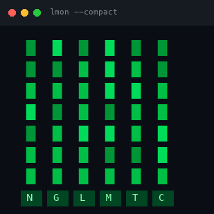

lmon
Пульс компьютера.
В одной строке.
Сеть, CPU, память, температура и диск — цветом в терминале. Без дашбордов и тяжёлых панелей.
brew install martiyanov/tap/lmon
sudo dpkg -i lmon_amd64.deb
GitHub · README · режимы · быстрый старт
Режимы вывода





Быстрый старт
диагностика
lmon lmon --profile server lmon --bars lmon --matrix --rain
скрипты
lmon --once lmon --once --json lmon --once --exit-code lmon --top 10
Настройки
Одна строка в конфиге — и lmon запускается уже с нужными колонками:
lmon --save-config, затем правь ~/.config/lmon/config.